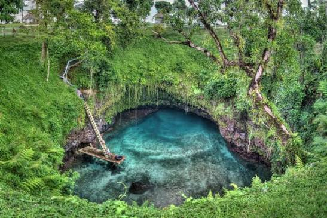
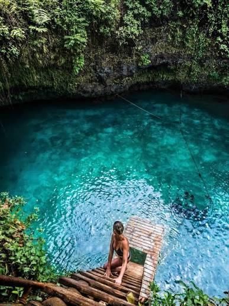

To Sua Ocean Trench
This is a very popular destination for tourists visiting Samoa. During my time as a missionary in Samoa, I was never able to see this with my own eyes, but the next time I go to Samoa, this is the first place I will visit.

